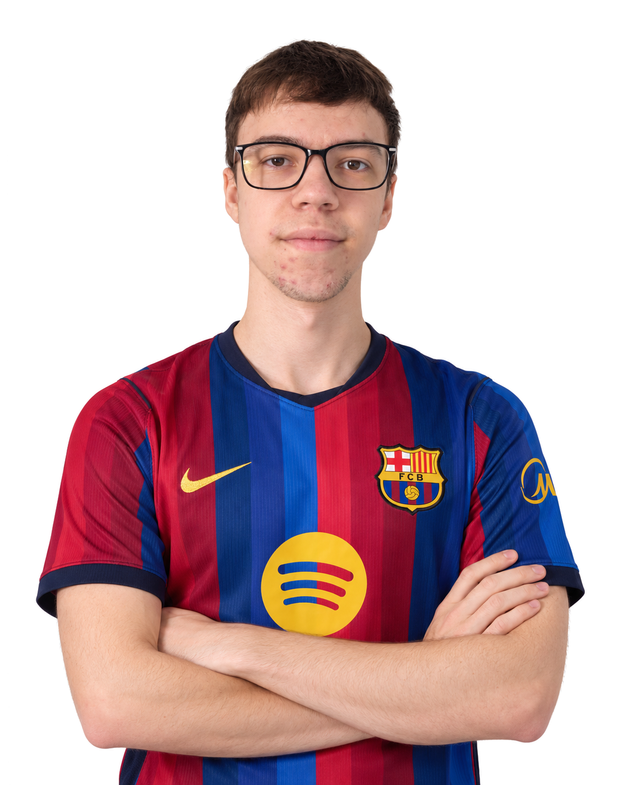

Som študentom Fakulty elektrotechniky a informatiky STU v Bratislave v odbore Aplikovaná informatika. Najviac ma zaujíma programovanie, vývoj hier, videohry, šport a technológie, ktoré sa dajú prakticky využiť pri tvorbe softvéru. Vo voľnom čase sa venujem hrám, športu a tvorbe vlastných projektov. Mojím cieľom je zlepšovať sa v programovaní a postupne sa uplatniť ako herný vývojár.
Moje 3 kľúčové zručnosti:
- Python
- Unity
- Anglický jazyk